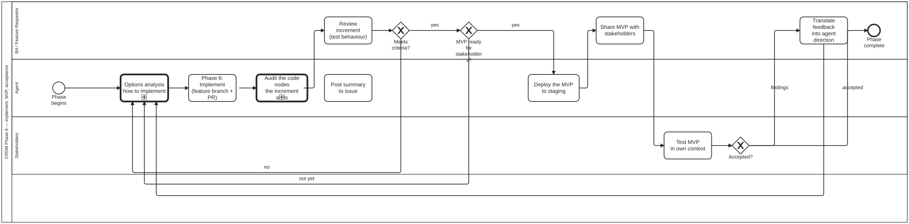

Generated from
cat-harness/processes/process/crdm-deliver.bpmnbygen-processes-viz.ts— do not edit here. All processes
CRDM Phase 6 — implement, MVP, acceptance
Process_CRDM_Deliver · strict · 9 step(s)
One phase and not three, because the loops say so: an increment the BA rejects, an MVP that is not ready, and stakeholder findings all route back into implementation. A subprocess has one exit and cannot be re-entered once finished, so splitting this region would have changed what the diagram says.

How it connects
- Called by: CRDM requirements
- Calls: Options analysis, Review task
- Presented on: no docs page section shows this diagram
- Running instances: none recorded
Lanes — who acts
| lane | role | what it does here |
|---|---|---|
| BA / Feature Requestor | business-analyst | Every signal that can send the loop back to A_Implement is filtered through this lane first: BA_ReviewIncrement judges behaviour rather than code, GW_MVPReady decides whether accumulated increments are worth showing stakeholders at all, and BA_TranslateFeedback is the only step that turns S_TestMVP’s raw findings into direction the agent can act on. Nothing stakeholder-facing reaches Lane_Agent without passing through here. |
| Agent | authoring-agent | Every loop-back in this phase — a rejected increment, an MVP not ready, stakeholder feedback — lands on A_Implement rather than on Call_OptionsAnalysis, so this lane always reworks an approach already chosen and never re-selects one. Deciding that the APPROACH itself is wrong is not this lane’s call: that belongs to the calling step in crdm-requirements.bpmn, one level up. |
| Stakeholders | stakeholder | Tests in the stakeholder’s own workflow and data rather than against the acceptance criteria BA_ReviewIncrement already checked — a second, independent pass rather than a repeat of the first. GW_StakeholderOK’s findings branch does not hand the agent anything directly; it hands raw results to BA_TranslateFeedback, which is this lane’s boundary: it reports what works and what does not, and translating that into direction is somebody else’s lane. |
Steps
Every one of the 9 step(s) is documented.
| step | lane | skill / sub-process | what it does |
|---|---|---|---|
Options analysis how to implementCall_OptionsAnalysis | Agent | calls Options analysis | On the single edge from Start_Process_CRDM_Deliver into A_Implement, so the approach is chosen before any code exists. By Phase 6 the needs, requirements and data model are signed off, which is exactly the evidence an options analysis needs and the reason it belongs here rather than earlier: at Call_Needs there is nothing to weigh, and after A_Implement the choice has been made in code.Note where this is NOT. The work-plan named crdm-requirements-workflow, and A_Implement is not in that diagram — crdm-requirements.bpmn is the orchestrator, seven call activities and a gateway, and Phase 6 lives here in crdm-deliver.bpmn. The call goes where the step is, not where the plan said to look.The three loop-backs into A_Implement — _5 (increment rejected), _7 (MVP not ready), _13 (feedback translated) — deliberately BYPASS this call. Routing them through it would run the subprocess on every iteration of the inner loop, which is the ceremony this design refuses: a gate invoked on every pass stops being read. An iteration reworks an approach already chosen; if the APPROACH is what is wrong, that is not a loop iteration and it belongs to the calling step in crdm-requirements.bpmn.Contrast upstream-version-adoption, where the loop DOES re-enter the analysis. There the loop-back returns to A_Impact, which re-gathers the evidence, so the second pass weighs genuinely different inputs. Here the loop returns to implementation with the evidence unchanged.A_Implement carries a note on the bean (its claim is the OPEN that Process_CRDM calls first); this step carries no bean op, because Process_OptionsAnalysis ends with its own decision-audit note on the bean the caller claimed. |
Phase 6: Implement (feature branch + PR)A_Implement | Agent | prepare-merge | Inner loop: agent claims a bean, implements on feature branch, opens PR, posts summary to the issue. When the requirement changes a rendered surface, implement against the wireframe candidate the requester or BA chose in Phases 3–4 (Process_WireframeDesignReview, called from Process_CRDM_Requirements), not against a fresh design; and the delivery summary links the chosen candidate beside the after-screenshot, so the reviewer can see the build matches what was approved. |
Audit the code nodes the increment addsA_CodeAudit | Agent | calls Review task | Descend into the review task for what this increment CHANGED IN THE GRAPH — Tool definitions in tools/ and schema definition nodesunder schemas/. It runs before the summary, and therefore before an MVP canbe shared: a Tool or schema node shipped in an MVP is the version stakeholders start building expectations on, and a node that names a skill nobody wrote is cheaper to catch here than after sign-off. Called, not inherited: the agent keeps its implementing role and takes on the code-reviewer lane inside Process_CodeReview for that call path only. |
Deploy the MVP to stagingA_DeployStaging | Agent | feature-staging | An MVP is shared AS A STAGING DEPLOY, not as a description of one. feature-staging.yml publishes the branch underSTAGING/<branch-slug>/ on gh-pages and comments the URL on the PR, so thestakeholder who tests it is looking at the built artefact rather than at a screenshot — the same argument the merge discipline makes about rendered work. Measured in this repo on 2026-09-16: holding a rendered change back for assessment made assessment harder, not safer. |
Post summary to issueA_Summary | Agent | delivery-summarystaging-review | What was accomplished, what remains, and the staging links: one deep link per changed page on the preview, with the same page on main (staging-review, “The deep-link rule”). |
Review increment (test behaviour)BA_ReviewIncrement | BA / Feature Requestor | crdm-requirements-workflow | Inner loop: the BA tests each delivered increment against the acceptance criteria. They do not review code — they test behaviour. |
Share MVP with stakeholdersBA_ShareMVP | BA / Feature Requestor | crdm-requirements-workflowstaging-review | Outer loop: the BA presents the accumulated increments to stakeholders as a testable MVP. Staging URL, demo, or walkthrough. |
Test MVP in own contextS_TestMVP | Stakeholders | — | Stakeholders test the delivered feature in their own workflow, with their own data. They report what works and what does not. |
Translate feedback into agent directionBA_TranslateFeedback | BA / Feature Requestor | crdm-requirements-workflow | The BA translates stakeholder findings into actionable direction: new beans or bean updates for the agent. |
Decisions
Every one of the 3 decision(s) is documented.
| decision | what decides it | branches |
|---|---|---|
Meets criteria?GW_IncrementOK | The BA’s result from testing the increment’s behaviour. no returns to implementation; yes asks whether the MVP is ready for stakeholders. | no → Phase 6: Implement (feature branch + PR) yes → MVP ready for stakeholders? |
MVP ready for stakeholders?GW_MVPReady | Asked after an increment passes: is the whole MVP ready for stakeholders? not yet implements the next increment; yes deploys the MVP to staging. | not yet → Phase 6: Implement (feature branch + PR) yes → Deploy the MVP to staging |
Accepted?GW_StakeholderOK | The stakeholder’s result from testing the MVP in their own context. findings go to the BA to translate into direction for the agent; accepted goes on to the post-MVP theme and UI review. | findings → Translate feedback into agent direction accepted → Phase complete |